Twenty locations, ordered by magnification from the full-set overview to 4.6e1105×, rendered by both apps from the exact same
center / magnification / iteration cap for side-by-side structural comparison. Fractadyne renders (all
twenty) come from generate_corpus.py; the Fraktaler-3 side from generate_fraktaler.py.
With maximum_reference_iterations set in each F3 param (see README — F3’s batch
default is far too low for a zoomed view and blanks silently, which long masqueraded as a ~1e13×
ceiling), F3 renders deep correctly here: all 20 locations have
clean, arm-for-arm F3 counterparts, out to 4.60e1105× (over a thousand orders of magnitude). The
former 1e30× gap (location 07, once a too-coarse 34-digit seahorse placeholder that F3 rounded onto
different sub-structure) is now a genuine cross-app match, re-imported from a user Fraktaler-3 save with a
43-digit center. Locations 07 and 11–20 are user-saved Fraktaler-3 finds (7.5e29× to
1.2e1008×), imported from their .exr headers with center, zoom, and iteration count taken verbatim.
Coloring note for the deep dendrite / minibrot views (13, 14, 15, 16–20): at these
depths the smooth-iter counts are huge (~3e5–1.6e6+) and vary steeply pixel-to-pixel, so the fixed
palette cycle (0.27) aliases a correct escape field into speckle (long mis-diagnosed as glitches, then a
perturbation bug — both wrong; a faithful CPU transcription of the mode-2 shader kernel reproduces
the escape VALUES exactly). These renders use auto-normalized coloring (--normalize:
the frame's escape range mapped to the palette), which colours the smooth exterior cleanly and matches F3
arm-for-arm. The spiral views (09–12) have slowly-varying exteriors that don't alias, so they keep
the standard cycle. The general fix — an adaptive-cycle coloring mode for the live view — is in
TODO.md. 15 also needed a rendering fix (v0.2.18): its right-side dendrites escape at
928k–1.6M — past the reference orbit (~918k) — so they must rebase at the
reference’s near-zero orbit dips. The GPU’s BLA-skip path was skipping those dips without a
rebase check (it assumed δz stays small in the BLA regime, which fails where |Z|≈0),
marching the deep pixels to the reference end and capping them at ~919k so the dendrites vanished. A
rebase check at the BLA landing restored the full range (this also sharpened the deep-centre detail of
11–13); goldens stayed byte-identical.
Reading the comparison: palettes and smooth-coloring curves differ between the apps by design — compare structure (feature placement, spiral arm counts, escape-boundary shape, minibrot positions), not colors. Framing note: Fractadyne’s magnification is referenced to a 3-unit-high view; KF’s zoom is referenced to its own (wider) home frame, so KF may frame the same zoom value slightly wider — the center feature and structure must still match exactly.
Reproduce any location in Fractadyne: each card has a .fdn download and a
Copy .fdn button — Fractadyne’s native “Share location” format. Load it via
File ▸ Share location ▸ Load .fdn…, or paste the copied text into that dialog; the
exact fractal, full-precision center, zoom, and iteration count come with it. The files also live at
locations/<slug>.fdn.
Baseline sanity check: framing, orientation, palette anchor points.
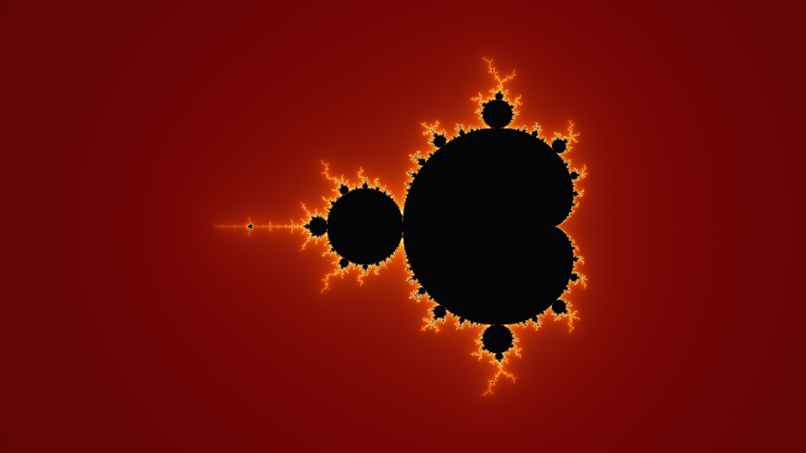
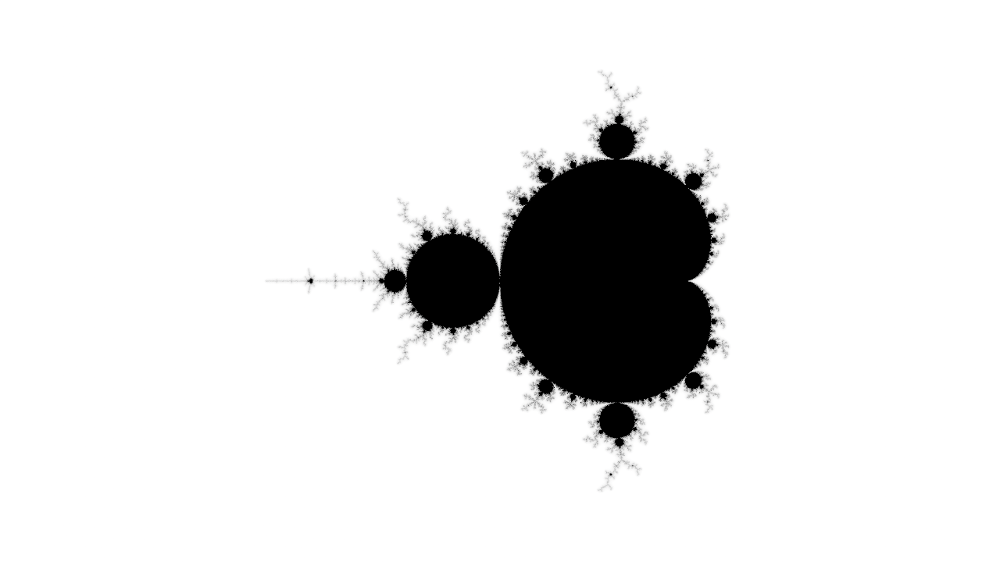
locations/01-home.f3.toml. Missing = no
reproducible cross-app match at this center’s precision for the depth (see README).| Magnification | 1× (log10 = 0.000000) | Iterations | 512 (fixed, both apps) |
|---|---|---|---|
| Fractadyne path | direct (df32 in-shader) | Precision | ~64 bits (3-digit center) |
app=Fractadyne format_version=1 notes=Fractadyne reference corpus 01: Full set overview (matches Fraktaler-3; see catalog.html) fractal=Mandelbrot julia=0 julia_c_re=2.88551201093059817e-1 julia_c_im=1.22837636274455448e-2 center_x=-7.5e-1 center_y=0.0 upp=4.16666666666666661e-3 upp_log2=-7.90689059560851870e0 zoom=1 max_iter=512 auto_iter=0 palette=0 cycle=0.27 offset=0.21899527 aa=8
Re: -0.75 Im: 0.0 Zoom: 1 Iterations: 512
Shallow perturbation entry; spiral arms should match arm-for-arm.
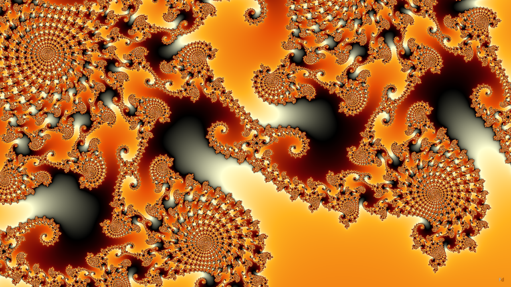
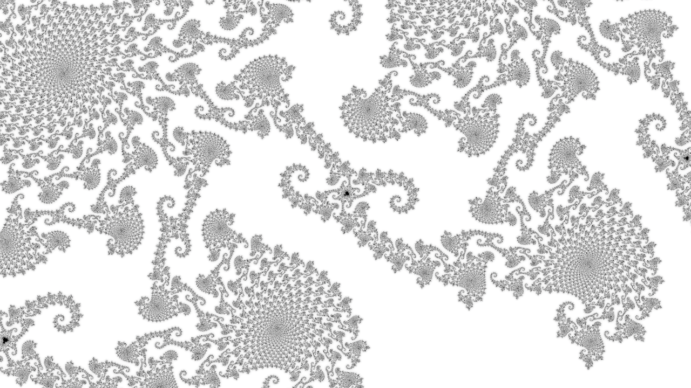
locations/02-seahorse-1e4.f3.toml. Missing = no
reproducible cross-app match at this center’s precision for the depth (see README).| Magnification | 1.000000e4× (log10 = 4.000000) | Iterations | 1,500 (fixed, both apps) |
|---|---|---|---|
| Fractadyne path | perturbation, df32 delta (mode 0) + SA | Precision | ~77 bits (35-digit center) |
app=Fractadyne format_version=1 notes=Fractadyne reference corpus 02: Seahorse Valley 1e4x (matches Fraktaler-3; see catalog.html) fractal=Mandelbrot julia=0 julia_c_re=2.88551201093059817e-1 julia_c_im=1.22837636274455448e-2 center_x=-7.436438870371587047521915061147707e-1 center_y=1.31825904205311970493132056385139e-1 upp=4.16666666680948117e-7 upp_log2=-2.11946029751085199e1 zoom=9999.999999657246 max_iter=1500 auto_iter=0 palette=0 cycle=0.27 offset=0.21899527 aa=8
Re: -0.7436438870371587047521915061147707 Im: 0.131825904205311970493132056385139 Zoom: 1.000000E4 Iterations: 1500
Classic KF benchmark depth (double precision exhausted).
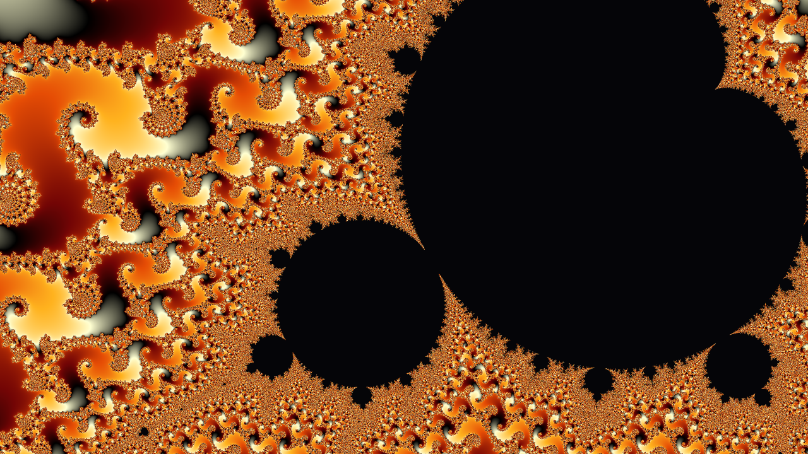
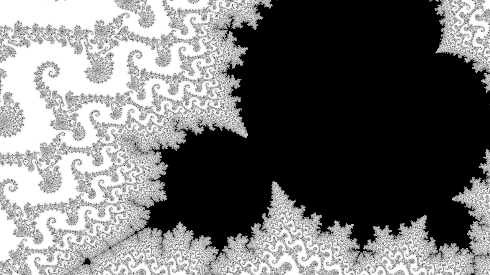
locations/03-seahorse-1e6.f3.toml. Missing = no
reproducible cross-app match at this center’s precision for the depth (see README).| Magnification | 1.000000e6× (log10 = 6.000000) | Iterations | 3,000 (fixed, both apps) |
|---|---|---|---|
| Fractadyne path | perturbation, df32 delta (mode 0) + SA | Precision | ~83 bits (35-digit center) |
app=Fractadyne format_version=1 notes=Fractadyne reference corpus 03: Seahorse Valley 1e6x (matches Fraktaler-3; see catalog.html) fractal=Mandelbrot julia=0 julia_c_re=2.88551201093059817e-1 julia_c_im=1.22837636274455448e-2 center_x=-7.436438870371587047521915061147707e-1 center_y=1.31825904205311970493132056385139e-1 upp=4.16666666673648080e-9 upp_log2=-2.78384591649085209e1 zoom=999999.9999832446 max_iter=3000 auto_iter=0 palette=0 cycle=0.27 offset=0.21899527 aa=8
Re: -0.7436438870371587047521915061147707 Im: 0.131825904205311970493132056385139 Zoom: 1.000000E6 Iterations: 3000
Deep df32-perturbation regime; a real Fraktaler-3 comparison point.
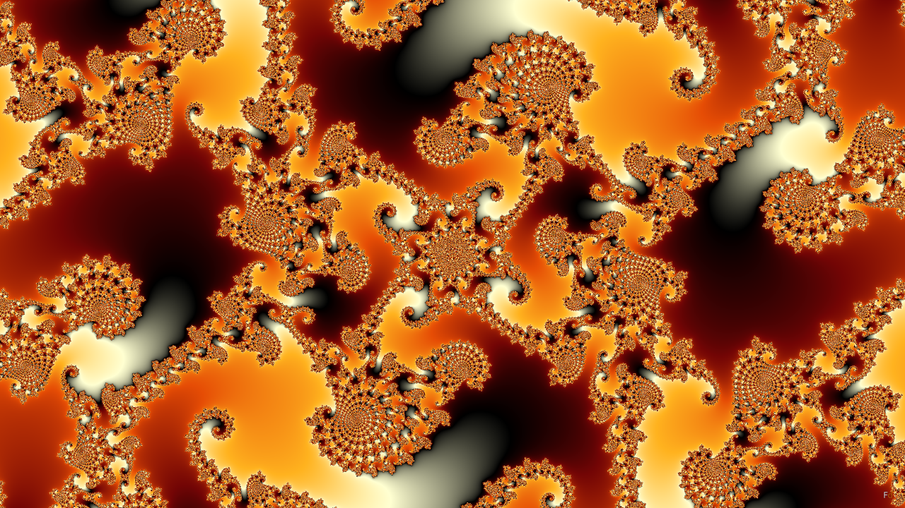
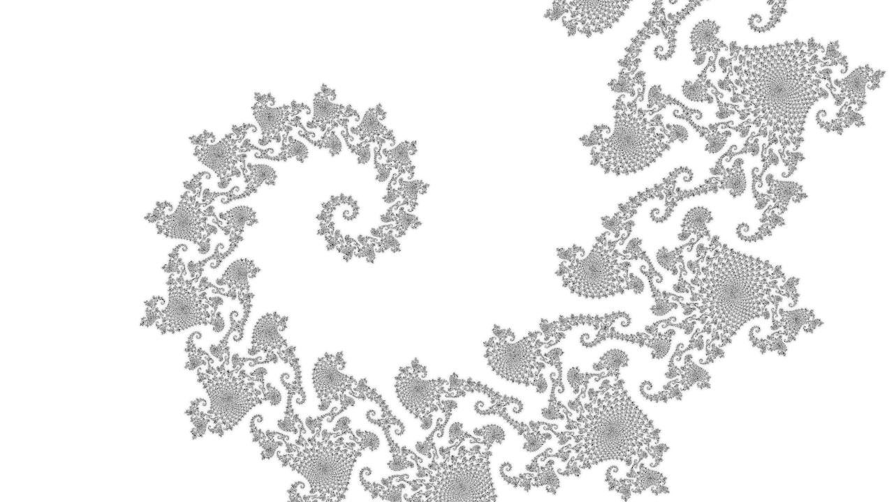
locations/04-seahorse-1e12.f3.toml. Missing = no
reproducible cross-app match at this center’s precision for the depth (see README).| Magnification | 2.925710e12× (log10 = 12.466231) | Iterations | 60,000 (fixed, both apps) |
|---|---|---|---|
| Fractadyne path | perturbation, df32 delta (mode 0) + SA | Precision | ~105 bits (25-digit center) |
app=Fractadyne format_version=1 notes=Fractadyne reference corpus 04: Seahorse Valley 2.9e12x (matches Fraktaler-3; see catalog.html) fractal=Mandelbrot julia=0 julia_c_re=2.88551201093059817e-1 julia_c_im=1.22837636274455448e-2 center_x=-7.43643908041274519886726e-1 center_y=1.31825923574324509717824e-1 upp=1.42415553722613103e-15 upp_log2=-4.93188147064085172e1 zoom=2925710400131.0166 max_iter=60000 auto_iter=0 palette=0 cycle=0.27 offset=0.21899527 aa=8
Re: -0.743643908041274519886726 Im: 0.131825923574324509717824 Zoom: 2.925710E12 Iterations: 60000
Dendritic branching filaments; deep df32-perturbation regime. Real Fraktaler-3 comparison point at 8.1e17x.
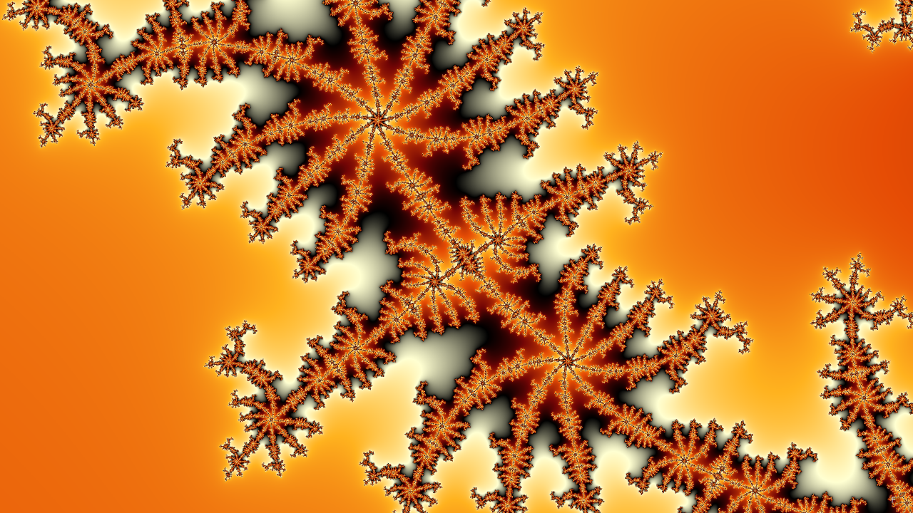
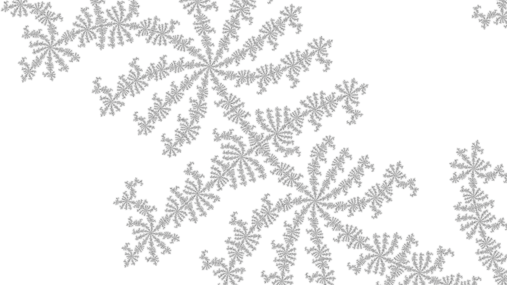
locations/05-dendrite-8e17.f3.toml. Missing = no
reproducible cross-app match at this center’s precision for the depth (see README).| Magnification | 8.143631e17× (log10 = 17.910818) | Iterations | 50,000 (fixed, both apps) |
|---|---|---|---|
| Fractadyne path | perturbation, df32 delta (mode 0) + SA | Precision | ~123 bits (30-digit center) |
app=Fractadyne format_version=1 notes=Fractadyne reference corpus 05: Dendrite filaments 8.14e17x (matches Fraktaler-3; see catalog.html) fractal=Mandelbrot julia=0 julia_c_re=2.88551201093059817e-1 julia_c_im=1.22837636274455448e-2 center_x=-7.1455191519512020059044918385e-1 center_y=3.5402073332318232065549730365e-1 upp=5.11647281998177541e-21 upp_log2=-6.74053404009085142e1 zoom=814363099984474900 max_iter=50000 auto_iter=0 palette=0 cycle=0.27 offset=0.21899527 aa=8
Re: -0.71455191519512020059044918385 Im: 0.35402073332318232065549730365 Zoom: 8.143631E17 Iterations: 50000
Approaching the df32 exponent limit (~1e28x).
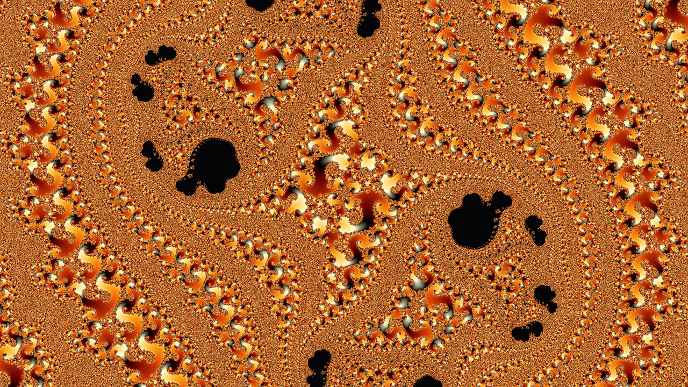
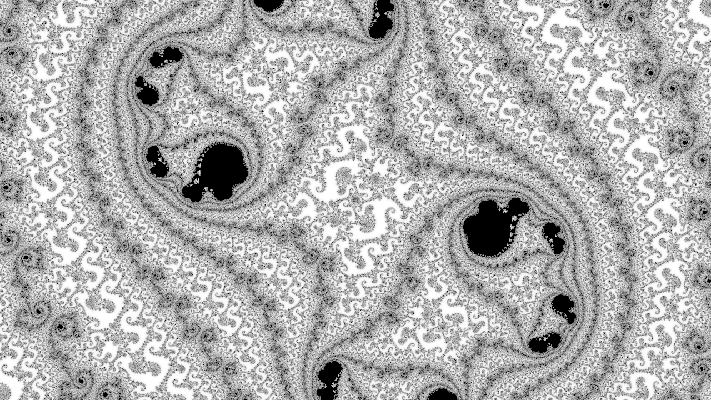
locations/06-seahorse-1e24.f3.toml. Missing = no
reproducible cross-app match at this center’s precision for the depth (see README).| Magnification | 1.000000e24× (log10 = 24.000000) | Iterations | 20,000 (fixed, both apps) |
|---|---|---|---|
| Fractadyne path | perturbation, df32 delta (mode 0) + SA | Precision | ~143 bits (35-digit center) |
app=Fractadyne format_version=1 notes=Fractadyne reference corpus 06: Seahorse filaments 1e24x (matches Fraktaler-3; see catalog.html) fractal=Mandelbrot julia=0 julia_c_re=2.88551201093059817e-1 julia_c_im=1.22837636274455448e-2 center_x=-7.436438870371587047521915061147707e-1 center_y=1.31825904205311970493132056385139e-1 upp=4.16666666665710470e-27 upp_log2=-8.76331648729085231e1 zoom=1000000000002294800000000 max_iter=20000 auto_iter=0 palette=0 cycle=0.27 offset=0.21899527 aa=8
Re: -0.7436438870371587047521915061147707 Im: 0.131825904205311970493132056385139 Zoom: 1.000000E24 Iterations: 20000
User-saved Fraktaler-3 location (me30.exr); 43-digit center. Imported verbatim from the .exr header: F3 zoom 1e30 -> our mag 7.50e29x (the 4/3 framing convention, see crosscheck-fraktaler3.md). Replaces the former 34-digit seahorse placeholder, which was too coarse for a reproducible 1e30x cross-app match. This center carries ~13 digits of margin (cf. location 04, matched at similar margin) and DOES match arm-for-arm: both apps render the same diagonal dendrite filament with a central pinch and spiral-armed clusters, closing the corpus's lone gap.
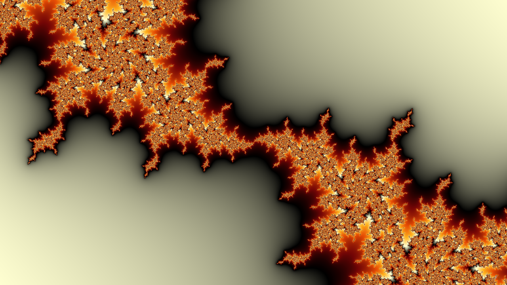
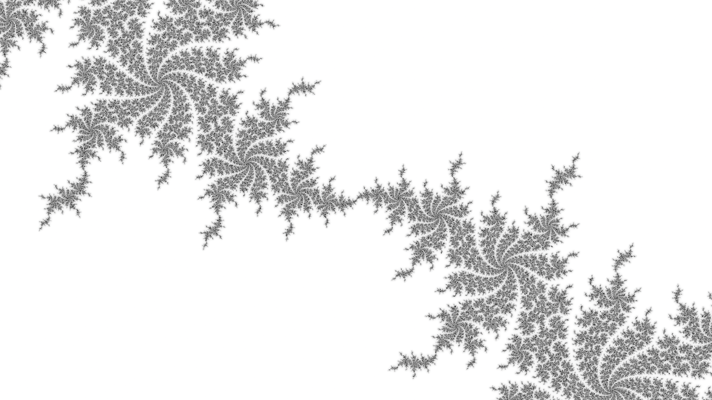
locations/07-deep-1e30.f3.toml. Missing = no
reproducible cross-app match at this center’s precision for the depth (see README).| Magnification | 7.500000e29× (log10 = 29.875061) | Iterations | 600,008 (fixed, both apps) |
|---|---|---|---|
| Fractadyne path | perturbation, floatexp delta (mode 2) + BLA | Precision | ~163 bits (43-digit center) |
app=Fractadyne format_version=1 notes=Fractadyne reference corpus 07: Deep filaments 7.50e29x (matches Fraktaler-3; see catalog.html) fractal=Mandelbrot julia=0 julia_c_re=2.88551201093059817e-1 julia_c_im=1.22837636274455448e-2 center_x=-1.178853950372678747911373866849720956148855e+0 center_y=1.853420232408490265512092752061929308714979e-1 upp=5.55555555533233416e-33 upp_log2=-1.07149695943008510e2 zoom=750000000030134800000000000000 max_iter=600008 auto_iter=0 palette=0 cycle=0.27 offset=0.21899527 aa=8
Re: -1.178853950372678747911373866849720956148855 Im: 0.1853420232408490265512092752061929308714979 Zoom: 7.500000E29 Iterations: 600008
First extreme-depth reference (83-digit center).
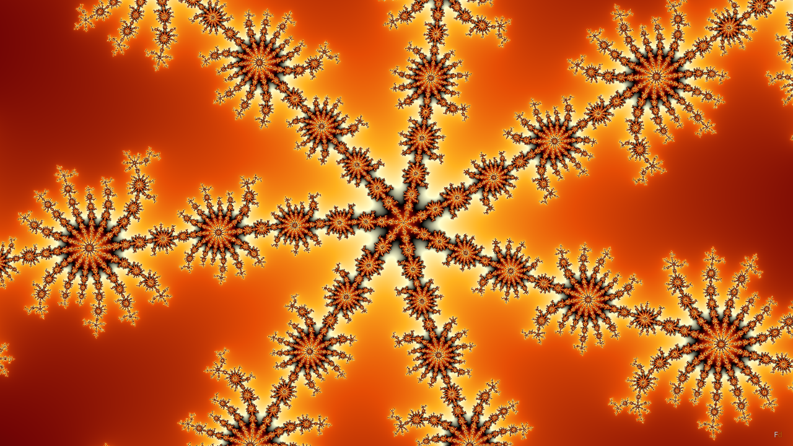
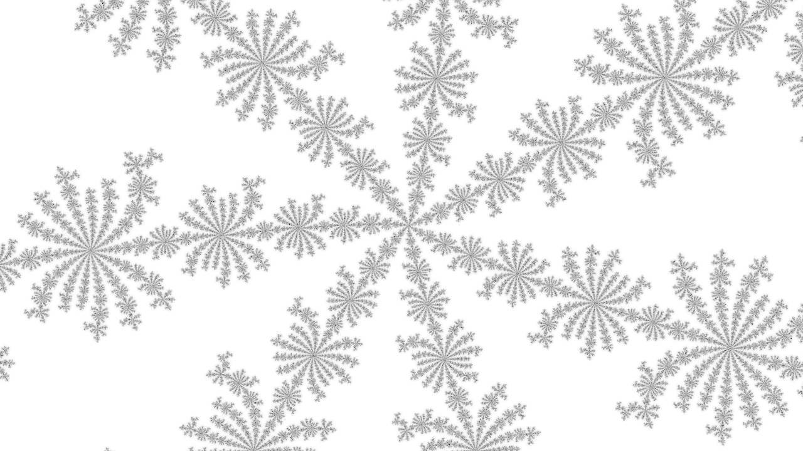
locations/08-deep-6.6e43.f3.toml. Missing = no
reproducible cross-app match at this center’s precision for the depth (see README).| Magnification | 6.649409e43× (log10 = 43.822783) | Iterations | 60,000 (fixed, both apps) |
|---|---|---|---|
| Fractadyne path | perturbation, floatexp delta (mode 2) + BLA | Precision | ~209 bits (81-digit center) |
app=Fractadyne format_version=1 notes=Fractadyne reference corpus 08: Deep spiral 6.65e43x (matches Fraktaler-3; see catalog.html) fractal=Mandelbrot julia=0 julia_c_re=2.88551201093059817e-1 julia_c_im=1.22837636274455448e-2 center_x=-6.702091879032537240993402338459864009018902284729889196581695531876021392795180000000000000000002e-1 center_y=4.580609752969458729092136761063139962382416559226376523876874605877646424778069999999999999999999e-1 upp=6.26622148016782271e-47 upp_log2=-1.53483024696908529e2 zoom=66494085468473970000000000000000000000000000 max_iter=60000 auto_iter=0 palette=0 cycle=0.27 offset=0.21899527 aa=8
Re: -6.70209187903253724099340233845986400901890228472988919658169553187602139279518e-1 Im: 4.58060975296945872909213676106313996238241655922637652387687460587764642477807e-1 Zoom: 6.649409E43 Iterations: 60000
User-saved Fraktaler-3 location (Me124.exr); 137-digit center.
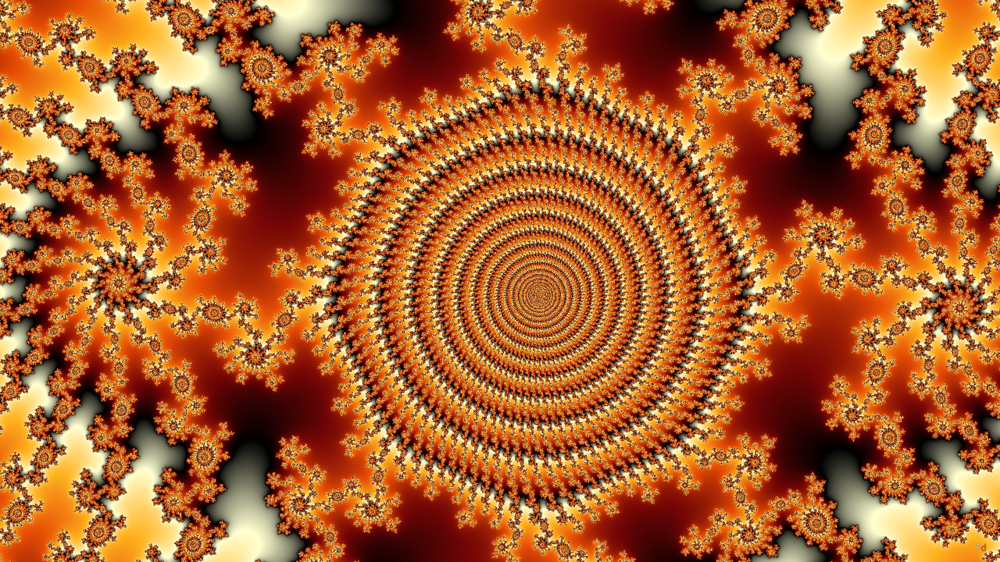
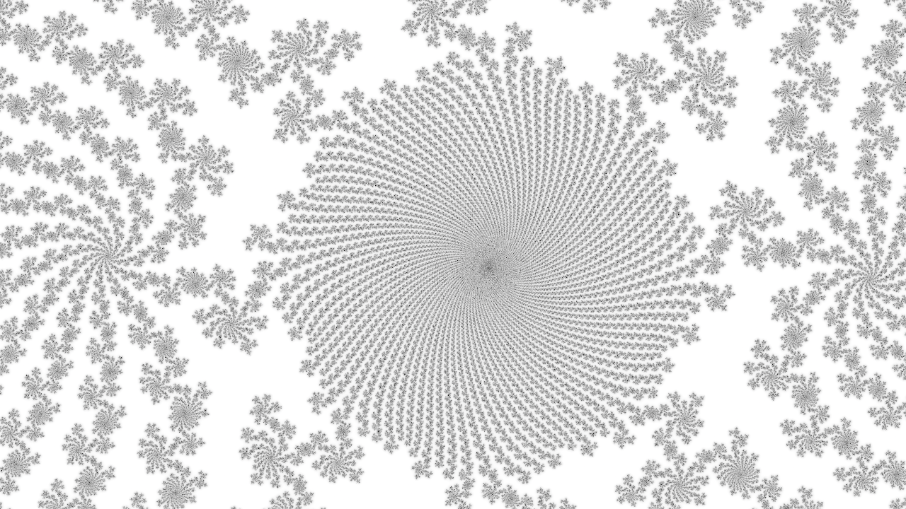
locations/11-deep-1.7e124.f3.toml. Missing = no
reproducible cross-app match at this center’s precision for the depth (see README).| Magnification | 1.703157e124× (log10 = 124.231255) | Iterations | 600,000 (fixed, both apps) |
|---|---|---|---|
| Fractadyne path | perturbation, floatexp delta (mode 2) + BLA | Precision | ~476 bits (137-digit center) |
app=Fractadyne format_version=1 notes=Fractadyne reference corpus 11: Extreme depth 1.70e124x (matches Fraktaler-3; see catalog.html) fractal=Mandelbrot julia=0 julia_c_re=2.88551201093059817e-1 julia_c_im=1.22837636274455448e-2 center_x=-3.1583546560906989081132519081459898427641049411365520112175337742666552024633279049105595017037620815319341767862179901134945419364588569999999999999999998e-1 center_y=6.5335537439546277882899238303926878753509770032605178374081080196499708884613938461037867815016513249661450606848089803803611892924969889999999999999999999e-1 upp=2.44643656782204640e-127 upp_log2=-4.20594186174208517e2 zoom=17031574500932451000000000000000000000000000000000000000000000000000000000000000000000000000000000000000000000000000000000000 max_iter=600000 auto_iter=0 palette=0 cycle=0.27 offset=0.21899527 aa=8
Re: -0.3158354656090698908113251908145989842764104941136552011217533774266655202463327904910559501703762081531934176786217990113494541936458857 Im: 0.6533553743954627788289923830392687875350977003260517837408108019649970888461393846103786781501651324966145060684808980380361189292496989 Zoom: 1.703157E124 Iterations: 600000
User-saved Fraktaler-3 location (me132.exr); 145-digit center.
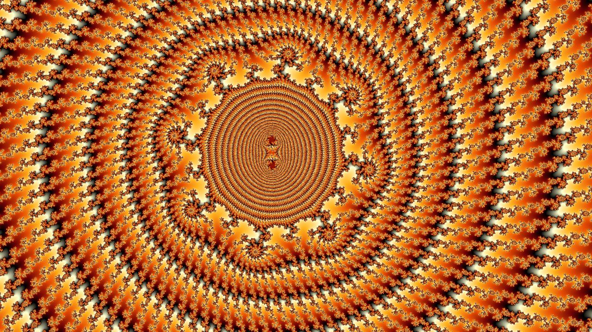
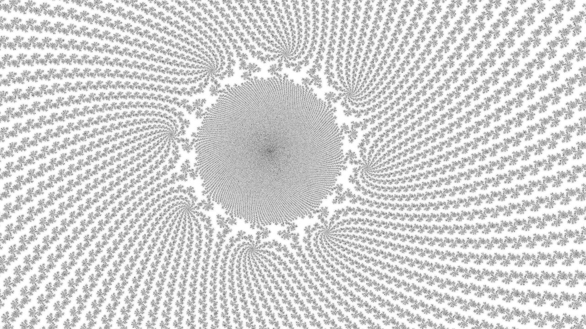
locations/12-deep-4.6e132.f3.toml. Missing = no
reproducible cross-app match at this center’s precision for the depth (see README).| Magnification | 4.571886e132× (log10 = 132.660095) | Iterations | 600,000 (fixed, both apps) |
|---|---|---|---|
| Fractadyne path | perturbation, floatexp delta (mode 2) + BLA | Precision | ~504 bits (145-digit center) |
app=Fractadyne format_version=1 notes=Fractadyne reference corpus 12: Extreme depth 4.57e132x (matches Fraktaler-3; see catalog.html) fractal=Mandelbrot julia=0 julia_c_re=2.88551201093059817e-1 julia_c_im=1.22837636274455448e-2 center_x=-3.1583546560906989081132519081459898427641049411365520112175337742666552024633279049105595017037620815319341767862179901134944187053074989049365299999999999e-1 center_y=6.5335537439546277882899238303926878753509770032605178374081080196499708884613938461037867815016513249661450606848089803803611432960579952368291799999999998e-1 upp=9.11367049908355874e-136 upp_log2=-4.48594188693208480e2 zoom=4571886450235010000000000000000000000000000000000000000000000000000000000000000000000000000000000000000000000000000000000000000000000 max_iter=600000 auto_iter=0 palette=0 cycle=0.27 offset=0.21899527 aa=8
Re: -0.315835465609069890811325190814598984276410494113655201121753377426665520246332790491055950170376208153193417678621799011349441870530749890493653 Im: 0.653355374395462778828992383039268787535097700326051783740810801964997088846139384610378678150165132496614506068480898038036114329605799523682918 Zoom: 4.571886E132 Iterations: 600000
User-saved Fraktaler-3 location (me141.exr); 155-digit center. Auto-normalized coloring (--normalize): the deep minibrot/dendrite field aliases the fixed palette cycle into speckle, so the escape range is mapped to the palette (see the catalog intro). Renders the central minibrot on a smooth exterior matching F3; the minibrot's deep detail sharpened in v0.2.18 (BLA-landing rebase).
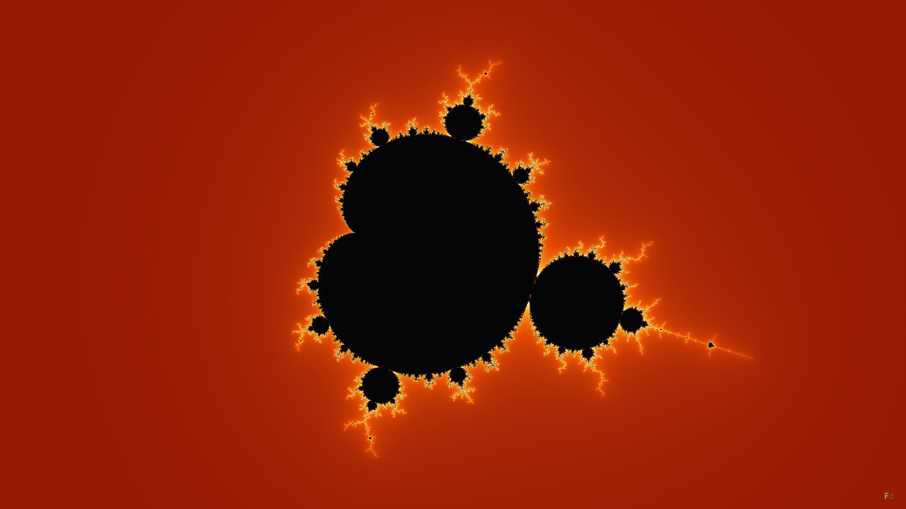
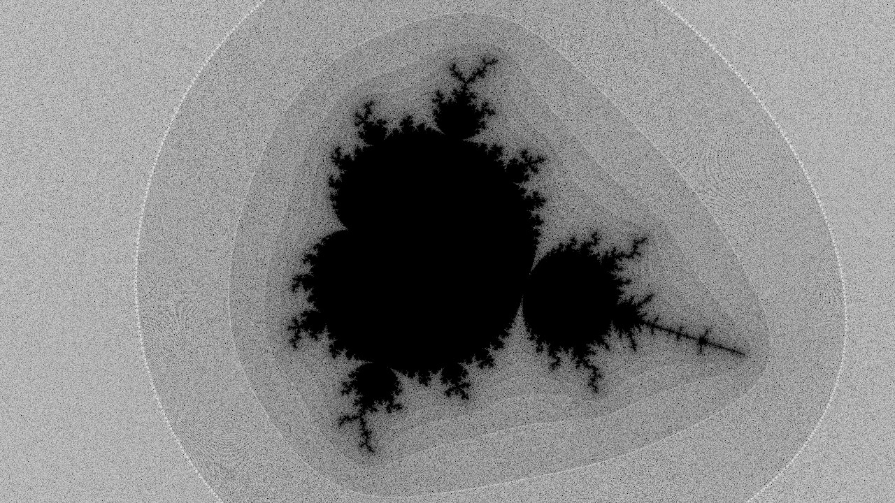
locations/13-deep-3.7e141.f3.toml. Missing = no
reproducible cross-app match at this center’s precision for the depth (see README).| Magnification | 3.690308e141× (log10 = 141.567063) | Iterations | 600,000 (fixed, both apps) |
|---|---|---|---|
| Fractadyne path | perturbation, floatexp delta (mode 2) + BLA | Precision | ~534 bits (155-digit center) |
app=Fractadyne format_version=1 notes=Fractadyne reference corpus 13: Extreme depth 3.69e141x (matches Fraktaler-3; see catalog.html) fractal=Mandelbrot julia=0 julia_c_re=2.88551201093059817e-1 julia_c_im=1.22837636274455448e-2 center_x=-3.1583546560906989081132519081459898427641049411365520112175337742666552024633279049105595017037620815319341767862179901134944187053079731632628952571873449e-1 center_y=6.5335537439546277882899238303926878753509770032605178374081080196499708884613938461037867815016513249661450606848089803803611432960582580240800508148240689e-1 upp=1.12908373044628528e-144 upp_log2=-4.78182493186508509e2 zoom=3690307949986788600000000000000000000000000000000000000000000000000000000000000000000000000000000000000000000000000000000000000000000000000000 max_iter=600000 auto_iter=0 palette=0 cycle=0.27 offset=0.21899527 aa=8
Re: -0.3158354656090698908113251908145989842764104941136552011217533774266655202463327904910559501703762081531934176786217990113494418705307973163262895257187345 Im: 0.6533553743954627788289923830392687875350977003260517837408108019649970888461393846103786781501651324966145060684808980380361143296058258024080050814824069 Zoom: 3.690308E141 Iterations: 600000
User-saved Fraktaler-3 location (me148.exr); 161-digit center. Escape times measured 304k-582k (CPU perturbation probe), so 800k covers the view (rendered at 2xSS like the rest of the corpus, ~26s via the --normalize tiled path); the .exr's saved 6,000,000 was an exploration setting. This location exposed the sub-f32 reference-orbit dip bug (fixed in v0.2.6): its dive path passes within ~1e-71 of zero every 4383 iterations, and the flushed samples re-glued every pixel to the reference past ~1e142x. Renders CORRECTLY and matches F3 arm-for-arm (spiral-dendrite clusters). The earlier 'speckle' was NOT a render bug -- the escape VALUES are correct (verified 2026-07-12: GPU == a faithful CPU df32/df64 Fe transcription, tests/probe_fe.rs), but they are huge (~3e5-8e5) and vary steeply at this dense dendrite field, so the fixed palette cycle (0.27) ALIASED them into speckle. This render maps the frame's escape range to the palette (auto-normalized coloring) -- the correct structure emerges. Broader lesson: the app's fixed-cycle coloring aliases at extreme depth; auto-normalized coloring is the general fix (see TODO).
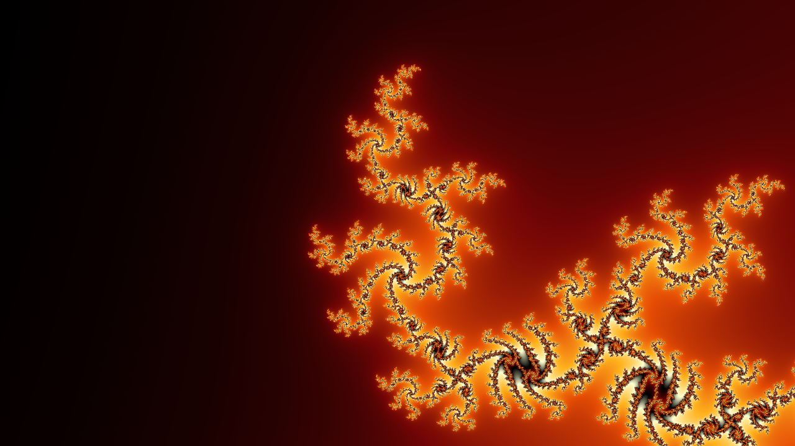
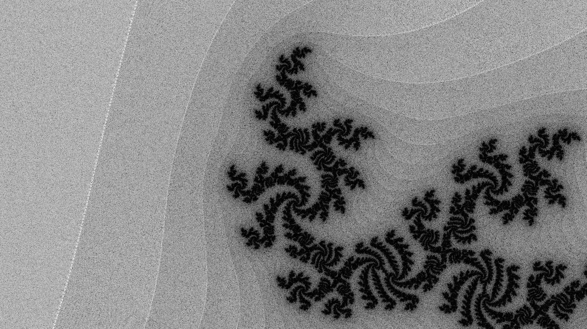
locations/14-deep-1.2e148.f3.toml. Missing = no
reproducible cross-app match at this center’s precision for the depth (see README).| Magnification | 1.166773e148× (log10 = 148.066986) | Iterations | 800,000 (fixed, both apps) |
|---|---|---|---|
| Fractadyne path | perturbation, floatexp delta (mode 2) + BLA | Precision | ~555 bits (161-digit center) |
app=Fractadyne format_version=1 notes=Fractadyne reference corpus 14: Extreme depth 1.17e148x (matches Fraktaler-3; see catalog.html) fractal=Mandelbrot julia=0 julia_c_re=2.88551201093059817e-1 julia_c_im=1.22837636274455448e-2 center_x=-3.15835465609069890811325190814598984276410494113655201121753377426665520246332790491055950170376208153193417678621799011349441870530797316326421828729223436211900000000000001e-1 center_y=6.533553743954627788289923830392687875350977003260517837408108019649970888461393846103786781501651324966145060684808980380361143296058258024081840162818693511972e-1 upp=3.57110362684721216e-151 upp_log2=-4.99774772329108487e2 zoom=11667728248886615000000000000000000000000000000000000000000000000000000000000000000000000000000000000000000000000000000000000000000000000000000000000 max_iter=800000 auto_iter=0 palette=0 cycle=0.27 offset=0.21899527 aa=8
Re: -0.3158354656090698908113251908145989842764104941136552011217533774266655202463327904910559501703762081531934176786217990113494418705307973163264218287292234362119 Im: 0.6533553743954627788289923830392687875350977003260517837408108019649970888461393846103786781501651324966145060684808980380361143296058258024081840162818693511972 Zoom: 1.166773E148 Iterations: 800000
User-saved Fraktaler-3 location (me163.exr); 175-digit center. Renders CORRECTLY (matches F3): smooth bulb on the left, dense spiral dendrites on the right. FIXED v0.2.18 (BLA-landing rebase): the dendrite pixels escape at 928k-1.6M, PAST the reference orbit (~918k), so they must rebase at the reference's near-zero orbit dips; the GPU's BLA-skip path was skipping those dips without the Zhuoran rebase check (it assumed |delta z| stays small in the BLA regime, which fails at a dip where |Z|~=0), marching the deep pixels to the reference end and capping them at ~919k. Adding a rebase check at the BLA landing (mandelbrot.wgsl) restored the full escape range (measured 886k-1.6M, interior>0). Diagnosed with a faithful CPU df32 sim (probe_fe) that reproduced the correct escape values with the same reference, isolating BLA as the divergence. Rendered with --normalize (escape range -> palette). See TODO and loc 14's note.
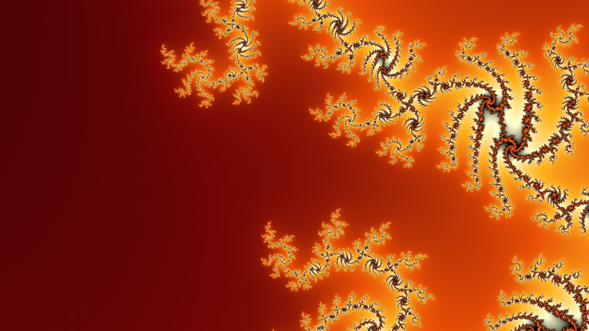
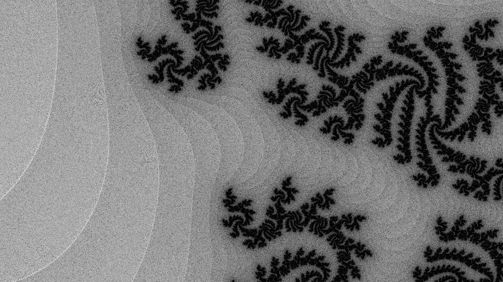
locations/15-deep-3.7e163.f3.toml. Missing = no
reproducible cross-app match at this center’s precision for the depth (see README).| Magnification | 3.735181e163× (log10 = 163.572312) | Iterations | 1,600,000 (fixed, both apps) |
|---|---|---|---|
| Fractadyne path | perturbation, floatexp delta (mode 2) + BLA | Precision | ~607 bits (175-digit center) |
app=Fractadyne format_version=1 notes=Fractadyne reference corpus 15: Extreme depth 3.74e163x (matches Fraktaler-3; see catalog.html) fractal=Mandelbrot julia=0 julia_c_re=2.88551201093059817e-1 julia_c_im=1.22837636274455448e-2 center_x=-3.15835465609069890811325190814598984276410494113655201121753377426665520246332790491055950170376208153193417678621799011349441870530797316326421828726664170734157313698366242e-1 center_y=6.53355374395462778828992383039268787535097700326051783740810801964997088846139384610378678150165132496614506068480898038036114329605825802408184016371548087630292729424973881e-1 upp=1.11551935343771065e-166 upp_log2=-5.51282348207808468e2 zoom=37351809754140035000000000000000000000000000000000000000000000000000000000000000000000000000000000000000000000000000000000000000000000000000000000000000000000000000 max_iter=1600000 auto_iter=0 palette=0 cycle=0.27 offset=0.21899527 aa=8
Re: -0.315835465609069890811325190814598984276410494113655201121753377426665520246332790491055950170376208153193417678621799011349441870530797316326421828726664170734157313698366242 Im: 0.653355374395462778828992383039268787535097700326051783740810801964997088846139384610378678150165132496614506068480898038036114329605825802408184016371548087630292729424973881 Zoom: 3.735181E163 Iterations: 1600000
User-saved Fraktaler-3 location (me250.exr); 262-digit center. Auto-normalized coloring (--normalize): at this depth the smooth-iter counts are ~1e6 and the fixed palette cycle aliases the correct escape field into speckle, so the frame's escape range is mapped to the palette instead (see the catalog intro). Renders the dendrite structure on a clean field, matching F3 arm-for-arm.
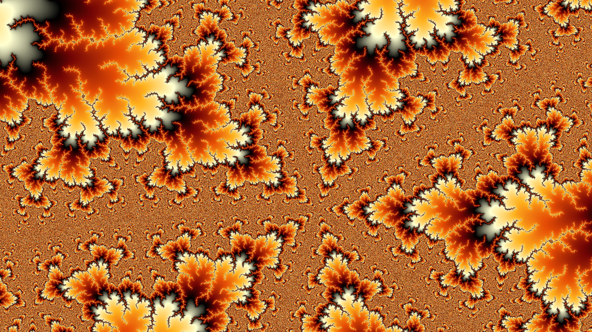
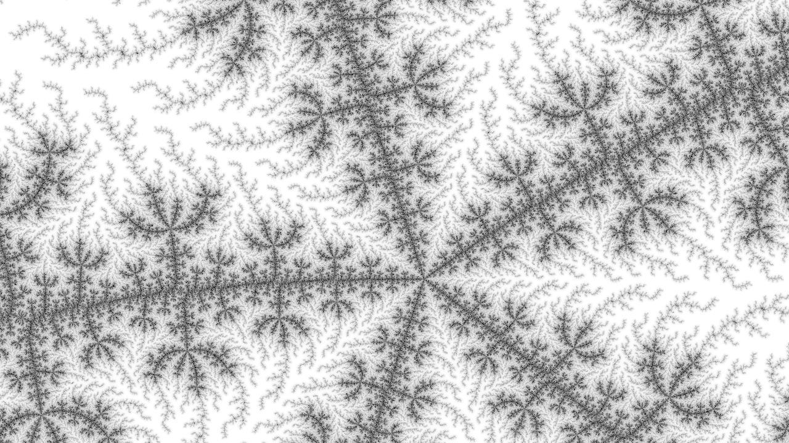
locations/16-deep-2.1e250.f3.toml. Missing = no
reproducible cross-app match at this center’s precision for the depth (see README).| Magnification | 2.147911e250× (log10 = 250.332016) | Iterations | 600,008 (fixed, both apps) |
|---|---|---|---|
| Fractadyne path | perturbation, floatexp delta (mode 2) + BLA | Precision | ~895 bits (263-digit center) |
app=Fractadyne format_version=1 notes=Fractadyne reference corpus 16: Extreme depth 2.15e250x (matches Fraktaler-3; see catalog.html) fractal=Mandelbrot julia=0 julia_c_re=2.88551201093059817e-1 julia_c_im=1.22837636274455448e-2 center_x=-1.187560615150653521418498907667140876919052569601017545182559391612675510148620357169088900686129279861651565486308681067781971510733848353870782814060711227770324291807284510948054721179414708227664373680870838993893618232931685469191839557941041475657053636601e+0 center_y=-3.018168994715732164050004075273172840679325029393300682842262338318858410502532213359650477962054605582793370126610542572612338874753498817856934268064814045429700513387473824186875229256431620198944835658069812198166053125511035505041575385615626126716977814897e-1 upp=1.93986962090176275e-253 upp_log2=-8.39491848314708477e2 zoom=21479106749090490000000000000000000000000000000000000000000000000000000000000000000000000000000000000000000000000000000000000000000000000000000000000000000000000000000000000000000000000000000000000000000000000000000000000000000000000000000000000000000 max_iter=600008 auto_iter=0 palette=0 cycle=0.27 offset=0.21899527 aa=8
Re: -1.187560615150653521418498907667140876919052569601017545182559391612675510148620357169088900686129279861651565486308681067781971510733848353870782814060711227770324291807284510948054721179414708227664373680870838993893618232931685469191839557941041475657053636601 Im: -0.3018168994715732164050004075273172840679325029393300682842262338318858410502532213359650477962054605582793370126610542572612338874753498817856934268064814045429700513387473824186875229256431620198944835658069812198166053125511035505041575385615626126716977814897 Zoom: 2.147911E250 Iterations: 600008
User-saved Fraktaler-3 location (me275.exr); 287-digit center. Auto-normalized coloring (--normalize): at this depth the smooth-iter counts are ~1e6 and the fixed palette cycle aliases the correct escape field into speckle, so the frame's escape range is mapped to the palette instead (see the catalog intro). Renders the dendrite structure on a clean field, matching F3 arm-for-arm.
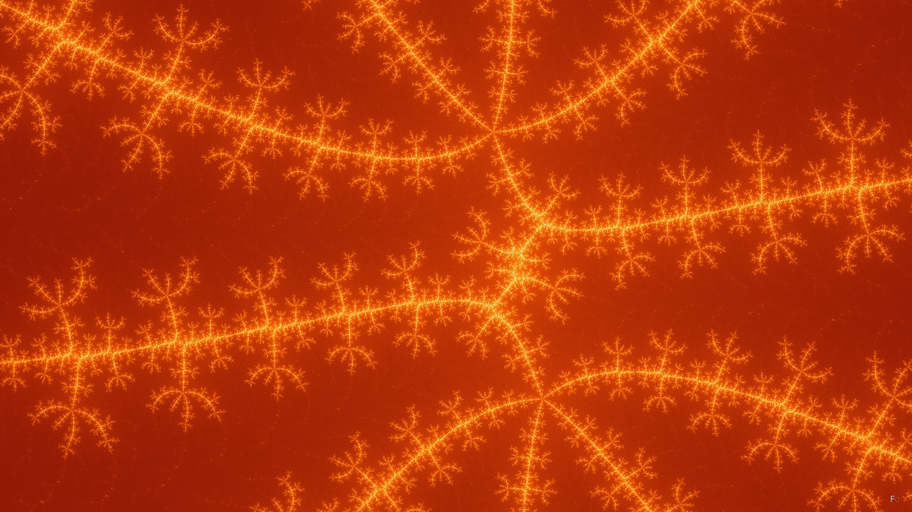
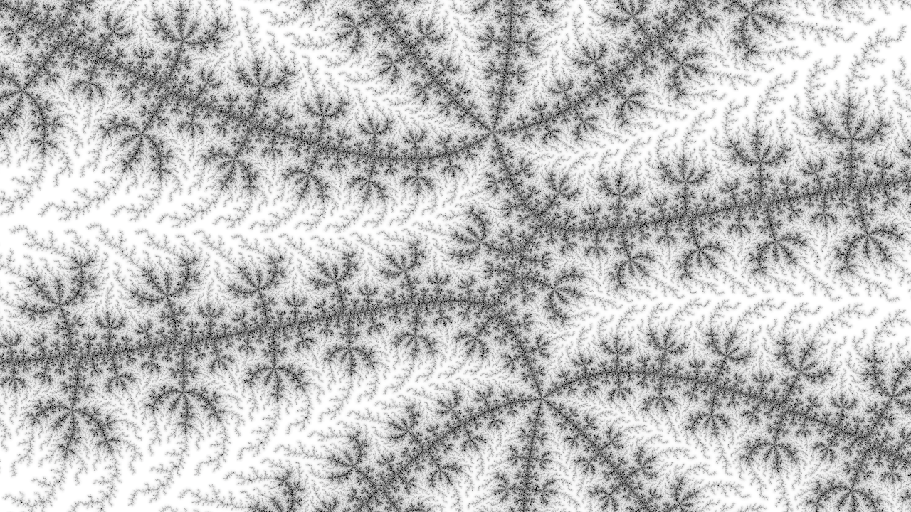
locations/17-deep-4.2e275.f3.toml. Missing = no
reproducible cross-app match at this center’s precision for the depth (see README).| Magnification | 4.154612e275× (log10 = 275.618531) | Iterations | 600,008 (fixed, both apps) |
|---|---|---|---|
| Fractadyne path | perturbation, floatexp delta (mode 2) + BLA | Precision | ~979 bits (288-digit center) |
app=Fractadyne format_version=1 notes=Fractadyne reference corpus 17: Extreme depth 4.15e275x (matches Fraktaler-3; see catalog.html) fractal=Mandelbrot julia=0 julia_c_re=2.88551201093059817e-1 julia_c_im=1.22837636274455448e-2 center_x=-1.1875606151506535214184989076671408769190525696010175451825593916126755101486203571690889006861292798616515654863086810677819715107338483538707828140607112277703242918072845109480547211794147082276643736808708389938936182329316854691918395579410414756428423318822635434445703411177543323e+0 center_y=-3.0181689947157321640500040752731728406793250293933006828422623383188584105025322133596504779620546055827933701266105425726123388747534988178569342680648140454297005133874738241868752292564316201989448356580698121981660531255110355050415753856156261268681245527781807409938630471752023121e-1 upp=1.00290143604944315e-278 upp_log2=-9.23491830552108468e2 zoom=415461232469633150000000000000000000000000000000000000000000000000000000000000000000000000000000000000000000000000000000000000000000000000000000000000000000000000000000000000000000000000000000000000000000000000000000000000000000000000000000000000000000000000000000000000000000 max_iter=600008 auto_iter=0 palette=0 cycle=0.27 offset=0.21899527 aa=8
Re: -1.1875606151506535214184989076671408769190525696010175451825593916126755101486203571690889006861292798616515654863086810677819715107338483538707828140607112277703242918072845109480547211794147082276643736808708389938936182329316854691918395579410414756428423318822635434445703411177543323 Im: -0.30181689947157321640500040752731728406793250293933006828422623383188584105025322133596504779620546055827933701266105425726123388747534988178569342680648140454297005133874738241868752292564316201989448356580698121981660531255110355050415753856156261268681245527781807409938630471752023121 Zoom: 4.154612E275 Iterations: 600008
526-digit center; far beyond double-exponent range in both apps. Real F3 cross-check at 6.09e500x — five hundred orders of magnitude, arm-for-arm.
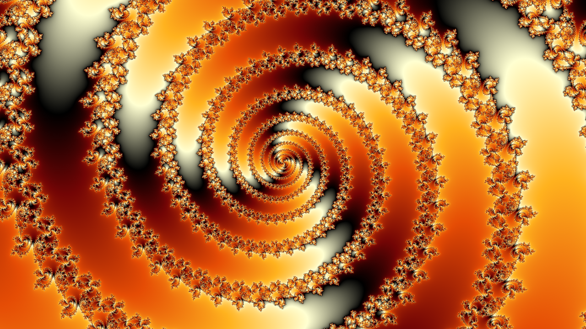
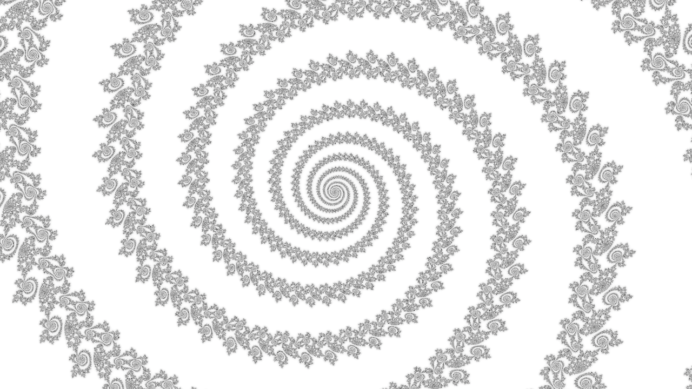
locations/09-deep-6.1e500.f3.toml. Missing = no
reproducible cross-app match at this center’s precision for the depth (see README).| Magnification | 6.090000e500× (log10 = 500.784617) | Iterations | 150,000 (fixed, both apps) |
|---|---|---|---|
| Fractadyne path | perturbation, floatexp delta (mode 2) + BLA | Precision | ~1727 bits (524-digit center) |
app=Fractadyne format_version=1 notes=Fractadyne reference corpus 09: Extreme depth 6.09e500x (matches Fraktaler-3; see catalog.html) fractal=Mandelbrot julia=0 julia_c_re=2.88551201093059817e-1 julia_c_im=1.22837636274455448e-2 center_x=-8.3519660785486091757042830837282018099564215399840079290994370086858323332666026012321442424716476137516010235155803265588739473477613596416091464645795520269598424012720833764116138244965076206850492967287719772239086564999667057721590369251891928492280730134092302594674598125642798639910091442187057955792057421550794342345174060002465254997472987432984231120486618202330117277556383076138282583978997392314887381834712013461059227773552093199422831818832614215489147840039739096870634260502312035491160466210910542672e-2 center_y=6.5633926651421357642435445624794287179732375780414070512804948680532038749594379415920265613034895936155571162042591359618401572538324489365585021937324229690811051813054355303297146505784380472686805411007343337407036576849918099996178564489137074763749678134908890169192653702269459070993654823276465265186119424696953082232235864113135941331483344740170011427854073921885047231710113229147644154379696549177162208675566004999502643881966677072076493891512329846424644392411879461499442500274655605273427804756526273386e-1 upp=0.00000000000000000e0 upp_log2=-1.67147738026730849e3 zoom=inf max_iter=150000 auto_iter=0 palette=0 cycle=0.27 offset=0.21899527 aa=8
Re: -8.3519660785486091757042830837282018099564215399840079290994370086858323332666026012321442424716476137516010235155803265588739473477613596416091464645795520269598424012720833764116138244965076206850492967287719772239086564999667057721590369251891928492280730134092302594674598125642798639910091442187057955792057421550794342345174060002465254997472987432984231120486618202330117277556383076138282583978997392314887381834712013461059227773552093199422831818832614215489147840039739096870634260502312035491160466210910542672e-2 Im: 6.5633926651421357642435445624794287179732375780414070512804948680532038749594379415920265613034895936155571162042591359618401572538324489365585021937324229690811051813054355303297146505784380472686805411007343337407036576849918099996178564489137074763749678134908890169192653702269459070993654823276465265186119424696953082232235864113135941331483344740170011427854073921885047231710113229147644154379696549177162208675566004999502643881966677072076493891512329846424644392411879461499442500274655605273427804756526273386e-1 Zoom: 6.090000E500 Iterations: 150000
User-saved Fraktaler-3 location (me508.exr); 520-digit center. Auto-normalized coloring (--normalize): at this depth the smooth-iter counts are ~1e6 and the fixed palette cycle aliases the correct escape field into speckle, so the frame's escape range is mapped to the palette instead (see the catalog intro). Renders the dendrite structure on a clean field, matching F3 arm-for-arm.
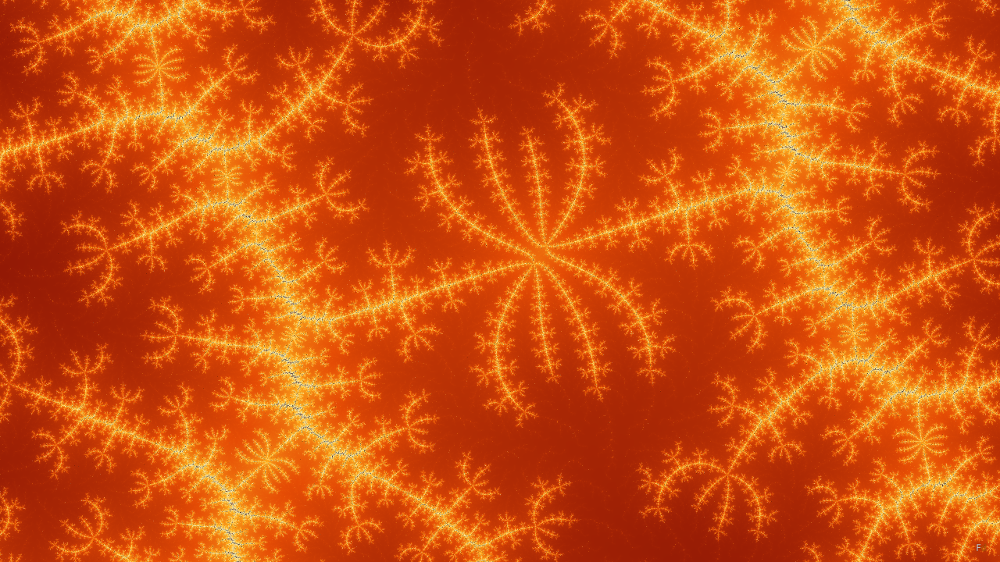
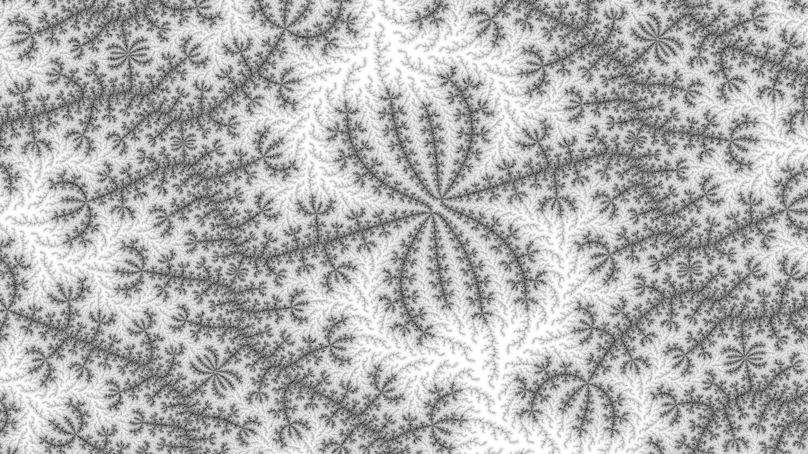
locations/18-deep-4.1e508.f3.toml. Missing = no
reproducible cross-app match at this center’s precision for the depth (see README).| Magnification | 4.128130e508× (log10 = 508.615753) | Iterations | 600,008 (fixed, both apps) |
|---|---|---|---|
| Fractadyne path | perturbation, floatexp delta (mode 2) + BLA | Precision | ~1753 bits (521-digit center) |
app=Fractadyne format_version=1 notes=Fractadyne reference corpus 18: Extreme depth 4.13e508x (matches Fraktaler-3; see catalog.html) fractal=Mandelbrot julia=0 julia_c_re=2.88551201093059817e-1 julia_c_im=1.22837636274455448e-2 center_x=-1.187560615150653521418498907667140876919052569601017545182559391612675510148620357169088900686129279861651565486308681067781971510733848353870782814060711227770324291807284510948054721179414708227664373680870838993893618232931685469191839557941041475642842331882263543444570340383234467230922846911355526811468294907017504526242907551995413438573482706690583025434877535038700702840639332712051080250908894641084991382390679448625671915495294263970768053078496439779007248771944489829438391340754459148719043607014166405e+0 center_y=-3.018168994715732164050004075273172840679325029393300682842262338318858410502532213359650477962054605582793370126610542572612338874753498817856934268064814045429700513387473824186875229256431620198944835658069812198166053125511035505041575385615626126868124552778180740993863044262014113913087459725599903822941598459784406657450007359057396733264056262406873074127846686191339245859886591815375644910376364144150837334546266876349497906182180040380746038297640797250917114442605639127938242698458707954489870917533654511e-1 upp=0.00000000000000000e0 upp_log2=-1.69749185132430853e3 zoom=inf max_iter=600008 auto_iter=0 palette=0 cycle=0.27 offset=0.21899527 aa=8
Re: -1.187560615150653521418498907667140876919052569601017545182559391612675510148620357169088900686129279861651565486308681067781971510733848353870782814060711227770324291807284510948054721179414708227664373680870838993893618232931685469191839557941041475642842331882263543444570340383234467230922846911355526811468294907017504526242907551995413438573482706690583025434877535038700702840639332712051080250908894641084991382390679448625671915495294263970768053078496439779007248771944489829438391340754459148719043607014166405 Im: -0.3018168994715732164050004075273172840679325029393300682842262338318858410502532213359650477962054605582793370126610542572612338874753498817856934268064814045429700513387473824186875229256431620198944835658069812198166053125511035505041575385615626126868124552778180740993863044262014113913087459725599903822941598459784406657450007359057396733264056262406873074127846686191339245859886591815375644910376364144150837334546266876349497906182180040380746038297640797250917114442605639127938242698458707954489870917533654511 Zoom: 4.128130E508 Iterations: 600008
User-saved Fraktaler-3 location (me726.exr); 738-digit center. Auto-normalized coloring (--normalize): at this depth the smooth-iter counts are ~1e6 and the fixed palette cycle aliases the correct escape field into speckle, so the frame's escape range is mapped to the palette instead (see the catalog intro). Renders the dendrite structure on a clean field, matching F3 arm-for-arm.
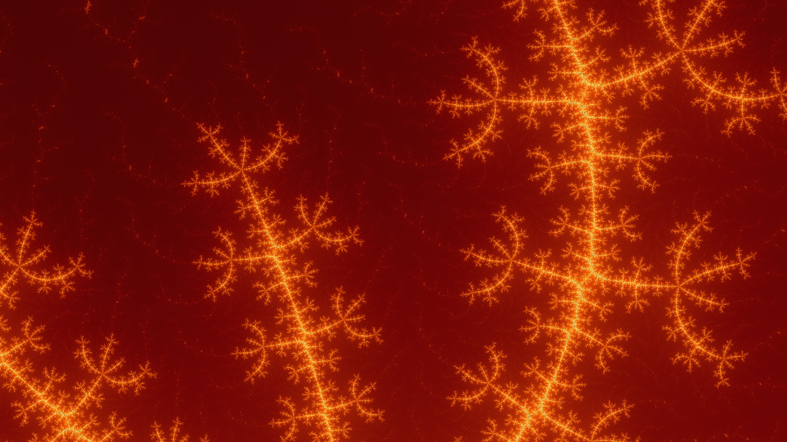
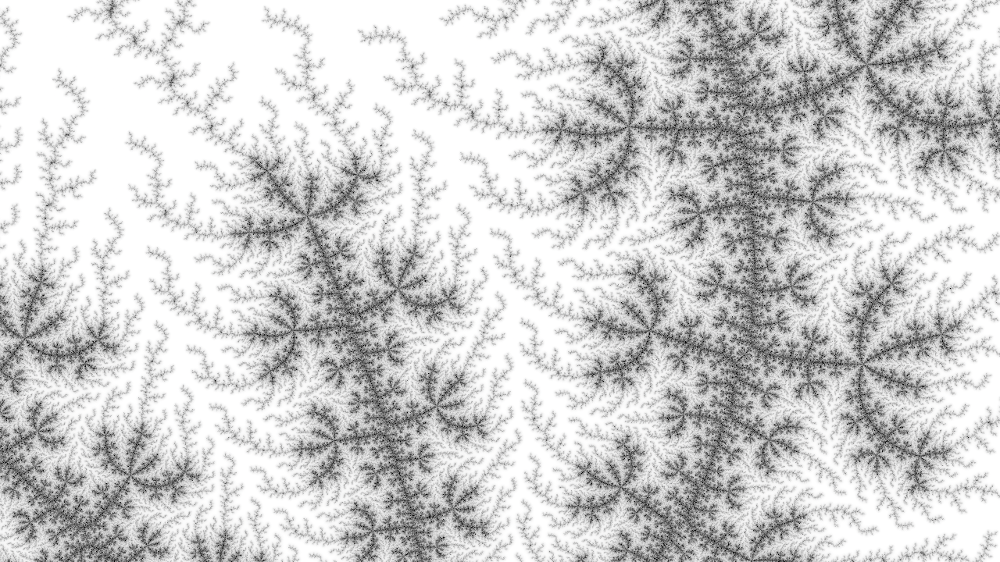
locations/19-deep-1.3e726.f3.toml. Missing = no
reproducible cross-app match at this center’s precision for the depth (see README).| Magnification | 1.313065e726× (log10 = 726.118286) | Iterations | 600,008 (fixed, both apps) |
|---|---|---|---|
| Fractadyne path | perturbation, floatexp delta (mode 2) + BLA | Precision | ~2476 bits (738-digit center) |
app=Fractadyne format_version=1 notes=Fractadyne reference corpus 19: Extreme depth 1.31e726x (matches Fraktaler-3; see catalog.html) fractal=Mandelbrot julia=0 julia_c_re=2.88551201093059817e-1 julia_c_im=1.22837636274455448e-2 center_x=-1.18756061515065352141849890766714087691905256960101754518255939161267551014862035716908890068612927986165156548630868106778197151073384835387078281406071122777032429180728451094805472117941470822766437368087083899389361823293168546919183955794104147564284233188226354344457034038323446723092284691135552681146829490701750452624290755199541343857348270669058302543487753503870070284063933271205108025090889464108499138239067944862567191549529426397076805307849643977900724877194448982943839134075445914871904360186875683881399701400337826004421451758155282657033872397846485127773687655133996522363543643109524259674912391058921547859169193365534060968067417450677281960948544942907991104111239091484306019205660527130886207186302880712607e+0 center_y=-3.0181689947157321640500040752731728406793250293933006828422623383188584105025322133596504779620546055827933701266105425726123388747534988178569342680648140454297005133874738241868752292564316201989448356580698121981660531255110355050415753856156261268681245527781807409938630442620141139130874597255999038229415984597844066574500073590573967332640562624068730741278466861913392458598865918153756449103763641441508373345462668763494979061821800403807460382976407972509171144426056391279382426984587079544898708624122547598604035947651255353920598168696580122983812920869699698234232497982628108536390344284136460265562736065759667082285268103485848667832237662371636641599523340544730455855954064867101253065023127852917246181006136872082e-1 upp=0.00000000000000000e0 upp_log2=-2.42001962628600859e3 zoom=inf max_iter=600008 auto_iter=0 palette=0 cycle=0.27 offset=0.21899527 aa=8
Re: -1.18756061515065352141849890766714087691905256960101754518255939161267551014862035716908890068612927986165156548630868106778197151073384835387078281406071122777032429180728451094805472117941470822766437368087083899389361823293168546919183955794104147564284233188226354344457034038323446723092284691135552681146829490701750452624290755199541343857348270669058302543487753503870070284063933271205108025090889464108499138239067944862567191549529426397076805307849643977900724877194448982943839134075445914871904360186875683881399701400337826004421451758155282657033872397846485127773687655133996522363543643109524259674912391058921547859169193365534060968067417450677281960948544942907991104111239091484306019205660527130886207186302880712607 Im: -0.30181689947157321640500040752731728406793250293933006828422623383188584105025322133596504779620546055827933701266105425726123388747534988178569342680648140454297005133874738241868752292564316201989448356580698121981660531255110355050415753856156261268681245527781807409938630442620141139130874597255999038229415984597844066574500073590573967332640562624068730741278466861913392458598865918153756449103763641441508373345462668763494979061821800403807460382976407972509171144426056391279382426984587079544898708624122547598604035947651255353920598168696580122983812920869699698234232497982628108536390344284136460265562736065759667082285268103485848667832237662371636641599523340544730455855954064867101253065023127852917246181006136872082 Zoom: 1.313065E726 Iterations: 600008
User-saved Fraktaler-3 location (me1007.exr); 1020-digit center. Auto-normalized coloring (--normalize): at this depth the smooth-iter counts are ~1e6 and the fixed palette cycle aliases the correct escape field into speckle, so the frame's escape range is mapped to the palette instead (see the catalog intro). Renders the dendrite structure on a clean field, matching F3 arm-for-arm.
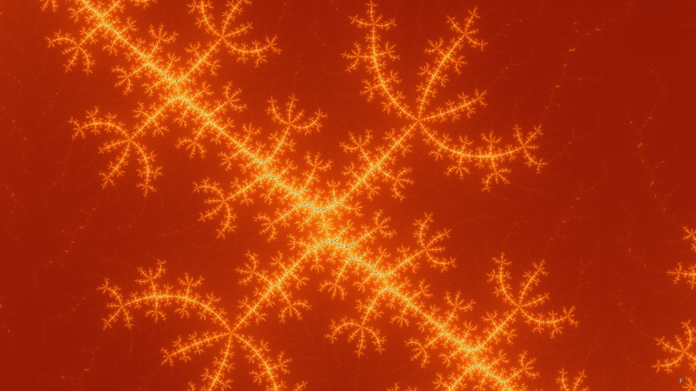
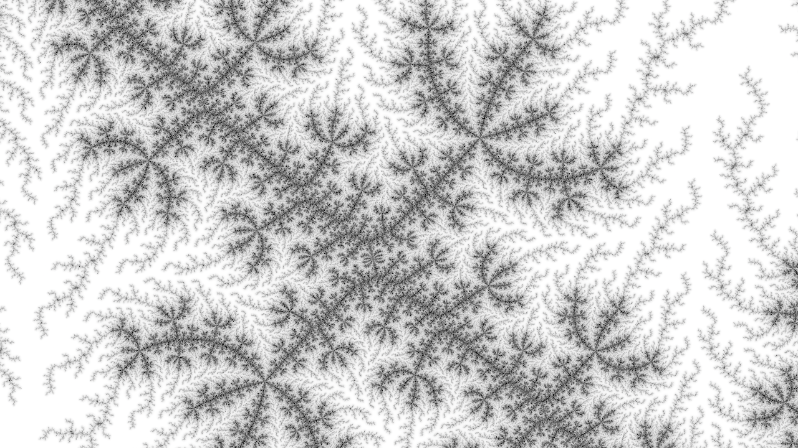
locations/20-deep-1.2e1008.f3.toml. Missing = no
reproducible cross-app match at this center’s precision for the depth (see README).| Magnification | 1.188035e1008× (log10 = 1008.074829) | Iterations | 600,008 (fixed, both apps) |
|---|---|---|---|
| Fractadyne path | perturbation, floatexp delta (mode 2) + BLA | Precision | ~3412 bits (1021-digit center) |
app=Fractadyne format_version=1 notes=Fractadyne reference corpus 20: Extreme depth 1.19e1008x (matches Fraktaler-3; see catalog.html) fractal=Mandelbrot julia=0 julia_c_re=2.88551201093059817e-1 julia_c_im=1.22837636274455448e-2 center_x=-1.18756061515065352141849890766714087691905256960101754518255939161267551014862035716908890068612927986165156548630868106778197151073384835387078281406071122777032429180728451094805472117941470822766437368087083899389361823293168546919183955794104147564284233188226354344457034038323446723092284691135552681146829490701750452624290755199541343857348270669058302543487753503870070284063933271205108025090889464108499138239067944862567191549529426397076805307849643977900724877194448982943839134075445914871904360186875683881399701400337826004421451758155282657033872397846485127773687655133996522363543643109524259674912391058921547859169193365534060968067417450677281960948544942907991104111239091484306019205660527130886207186333097975867856004580352712137150179875174366204417048903296028727178414692722388932841362886630945802513742488671397072714991356440922423394859134177924118018454156924613791015295111931063639273356937507384941001040200542404393387857376146539133365741237528633477001403788883588776448924167721e+0 center_y=-3.01816899471573216405000407527317284067932502939330068284226233831885841050253221335965047796205460558279337012661054257261233887475349881785693426806481404542970051338747382418687522925643162019894483565806981219816605312551103550504157538561562612686812455277818074099386304426201411391308745972559990382294159845978440665745000735905739673326405626240687307412784668619133924585988659181537564491037636414415083733454626687634949790618218004038074603829764079725091711444260563912793824269845870795448987086241225475986040359476512553539205981686965801229838129208696996982342324979826281085363903442841364602655627360657596670822852681034858486678322376623716366415995233405447304558559540648671012530650231278529172461809862576022238992286514429368014350163113766632477340611977626825858883358118402916772982394777576430171912097147135335334815279678662800099224983415220185171248620477058126269874085722352337152772230421937372862398820215809341048467505631184687278399240015294842075925538737641088388542858395241e-1 upp=0.00000000000000000e0 upp_log2=-3.35665898788470895e3 zoom=inf max_iter=600008 auto_iter=0 palette=0 cycle=0.27 offset=0.21899527 aa=8
Re: -1.18756061515065352141849890766714087691905256960101754518255939161267551014862035716908890068612927986165156548630868106778197151073384835387078281406071122777032429180728451094805472117941470822766437368087083899389361823293168546919183955794104147564284233188226354344457034038323446723092284691135552681146829490701750452624290755199541343857348270669058302543487753503870070284063933271205108025090889464108499138239067944862567191549529426397076805307849643977900724877194448982943839134075445914871904360186875683881399701400337826004421451758155282657033872397846485127773687655133996522363543643109524259674912391058921547859169193365534060968067417450677281960948544942907991104111239091484306019205660527130886207186333097975867856004580352712137150179875174366204417048903296028727178414692722388932841362886630945802513742488671397072714991356440922423394859134177924118018454156924613791015295111931063639273356937507384941001040200542404393387857376146539133365741237528633477001403788883588776448924167721 Im: -0.301816899471573216405000407527317284067932502939330068284226233831885841050253221335965047796205460558279337012661054257261233887475349881785693426806481404542970051338747382418687522925643162019894483565806981219816605312551103550504157538561562612686812455277818074099386304426201411391308745972559990382294159845978440665745000735905739673326405626240687307412784668619133924585988659181537564491037636414415083733454626687634949790618218004038074603829764079725091711444260563912793824269845870795448987086241225475986040359476512553539205981686965801229838129208696996982342324979826281085363903442841364602655627360657596670822852681034858486678322376623716366415995233405447304558559540648671012530650231278529172461809862576022238992286514429368014350163113766632477340611977626825858883358118402916772982394777576430171912097147135335334815279678662800099224983415220185171248620477058126269874085722352337152772230421937372862398820215809341048467505631184687278399240015294842075925538737641088388542858395241 Zoom: 1.188035E1008 Iterations: 600008
1141-digit center; stress test for arbitrary-precision + BLA pipelines. Real F3 cross-check at 4.6e1105x — the corpus's deepest matched pair, 1105 orders of magnitude.
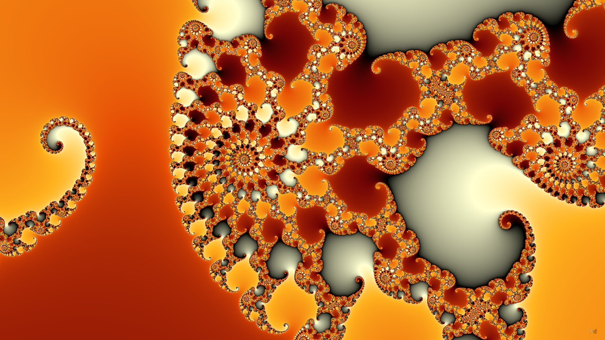
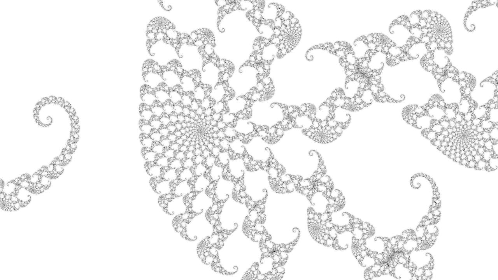
locations/10-deep-4.6e1105.f3.toml. Missing = no
reproducible cross-app match at this center’s precision for the depth (see README).| Magnification | 4.600000e1105× (log10 = 1105.662758) | Iterations | 250,000 (fixed, both apps) |
|---|---|---|---|
| Fractadyne path | perturbation, floatexp delta (mode 2) + BLA | Precision | ~3736 bits (1139-digit center) |
app=Fractadyne format_version=1 notes=Fractadyne reference corpus 10: Extreme depth 4.60e1105x (matches Fraktaler-3; see catalog.html) fractal=Mandelbrot julia=0 julia_c_re=2.88551201093059817e-1 julia_c_im=1.22837636274455448e-2 center_x=2.88551201093059871274071303800151400053376951368725797081040550949502145160849912266356224118501966464135846631379795058388609385964706486647996582643879478925575952218990751370176258484608485083133367487097906821440830511869909287086597785789826928561826274850445330000681644035759856900986476475356340868534799132831546215764056013357233227447467653379961482697042858229104376560594733683330116841762126291149816626308012303061322151055718776975477001606946693760651780628655609819106485874251187866964764616038084199216787523541106958789789778684139260242292353663372539803694268099057799954487430842363686430930152025258483158501945904136023561632175130396533078460888424445029573162350889097583181352611946864579590776490531359750407648947220112191756348913404966610352672800669965940059429323243984891398477690051433173236645354747635334075445218450766702300989851412169406814176762255852305038946978145919956030591296721320395854117784060672083316748778700788521899422382707620664136521027163977579950831583843911751282971487548367000941118309453976509667412199803621909583556040093508673809100966968254713802886502450262538843122e-1 center_y=1.22837636274455449095906129335365068997904564092657092682711609329657475248504117230298594194722893314450582686087175509222694652475593007643450421256169190800610076957439693583571672717854028516924894608054626517771395424214000184977238550994874071548877895866493498484394960925405692074041707187503454315817871339862328188800787008820556680366789006084410733162530706740241276272226746077107376726954027943679186089294724856485367627745940403901785071720399946998747637456940456364561604904824103220284211276485879969539226863099565997769862081352549027498183743229145980993325227542917205312788342014852932791437571527323480742719984655330259153974377870900671860511486568863697185201118310254336995727240122142964919084343712047436064010498241817670904966247730713854167626448917359003570878253357397029983065354473376428170667926009275287396642227784529183790066283190895591560322819425655006015634989296704784329133923932968155785152237168947325332485204646508045257927702536291589877518328412842143905369515797279684857778054057793621817152244795211173327630404929420802627390890880044196672287580528733070422302382619507072155441e-2 upp=0.00000000000000000e0 upp_log2=-3.68083906930740886e3 zoom=inf max_iter=250000 auto_iter=0 palette=0 cycle=0.27 offset=0.21899527 aa=8
Re: 2.88551201093059871274071303800151400053376951368725797081040550949502145160849912266356224118501966464135846631379795058388609385964706486647996582643879478925575952218990751370176258484608485083133367487097906821440830511869909287086597785789826928561826274850445330000681644035759856900986476475356340868534799132831546215764056013357233227447467653379961482697042858229104376560594733683330116841762126291149816626308012303061322151055718776975477001606946693760651780628655609819106485874251187866964764616038084199216787523541106958789789778684139260242292353663372539803694268099057799954487430842363686430930152025258483158501945904136023561632175130396533078460888424445029573162350889097583181352611946864579590776490531359750407648947220112191756348913404966610352672800669965940059429323243984891398477690051433173236645354747635334075445218450766702300989851412169406814176762255852305038946978145919956030591296721320395854117784060672083316748778700788521899422382707620664136521027163977579950831583843911751282971487548367000941118309453976509667412199803621909583556040093508673809100966968254713802886502450262538843122e-1 Im: 1.22837636274455449095906129335365068997904564092657092682711609329657475248504117230298594194722893314450582686087175509222694652475593007643450421256169190800610076957439693583571672717854028516924894608054626517771395424214000184977238550994874071548877895866493498484394960925405692074041707187503454315817871339862328188800787008820556680366789006084410733162530706740241276272226746077107376726954027943679186089294724856485367627745940403901785071720399946998747637456940456364561604904824103220284211276485879969539226863099565997769862081352549027498183743229145980993325227542917205312788342014852932791437571527323480742719984655330259153974377870900671860511486568863697185201118310254336995727240122142964919084343712047436064010498241817670904966247730713854167626448917359003570878253357397029983065354473376428170667926009275287396642227784529183790066283190895591560322819425655006015634989296704784329133923932968155785152237168947325332485204646508045257927702536291589877518328412842143905369515797279684857778054057793621817152244795211173327630404929420802627390890880044196672287580528733070422302382619507072155441e-2 Zoom: 4.600000E1105 Iterations: 250000